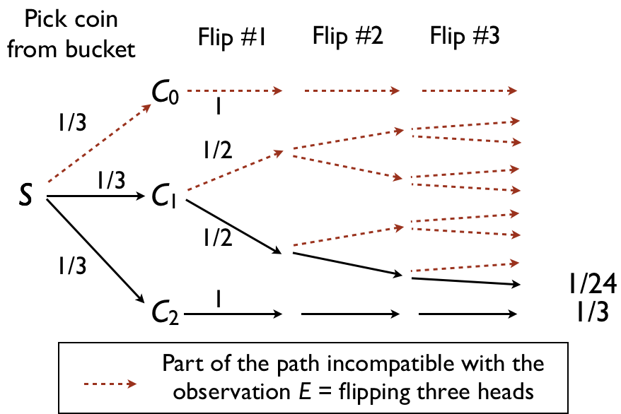

println("Analytical: ", (1/24) / (1/24 + 1/3))Analytical: 0.1111111111111111We have a prior \(\pi_0(x)\) and a likelihood \(L(x) = L(y|x)\), we want to approximately sample from \(\pi(x) \propto \pi_0(x) L(x)\).
Today we will consider a naive Self-Normalizing Importance Sampling estimator with target \(\pi\) and proposal \(\pi_0\) :
\[ \begin{align} \hat F &= \sum_{i=1}^n \frac{w(X_i)}{\sum_j w(X_j)} f(X_i) \\ w(x) &\propto \frac{\pi(x)}{\pi_0(x)} = L(x). \end{align} \]
Here each \(X_i\) is called a particle and \(w(X_i)\) is called its weight.
The likelihood will be a product of factors, \(L(x) = \prod_m L(y_m | x)\), ranging over the different observations.
Imagine a bag with \(K+1\) biased coins
Coin number \(i\) in \(\{0, 1, 2, ..., K\}\) has bias \(p_i = i/K\)
Example: \(K+1 = 3\) coins
Generative process:
Mathematically, the model is: \[\begin{align} X &\sim \text{Unif}\{0, 1, 2, \dots, (K-1), K\} \\ Y_m | X &\sim \text{Bern}(X/K); m \in \{1, 2, 3\} \end{align}\]
Query: probability of a fair coin given we see three heads in a row, i.e. \(P(X=1|Y_1 = Y_2 = Y_3 = 1)\).
Analytic answer

println("Analytical: ", (1/24) / (1/24 + 1/3))Analytical: 0.1111111111111111The user specifies the model with the following function:
const coin_flips = [1, 1, 1]3-element Vector{Int64}:
1
1
1function my_first_probabilistic_program(rng)
coin_index = rand(rng, DiscreteUniform(0, 2))
for i in 1:3
observe(coin_flips[i], Bernoulli(coin_index / 2))
end
return coin_index == 1 ? 1 : 0
endmy_first_probabilistic_program (generic function with 1 method)and then pass that function into a function called posterior(...) and obtain a Monte Carlo approximation to the above query.
rng in the codeprobabilistic_program in the following. From the last bullet, this function takes as input a random number generator, so sampling is done via probabilistic_program(rng)probabilistic_programcurrent_log_likelihood that we reset each time we are about to create a new particleprobabilistic_program encounters a call to observe, increment current_log_likelihoodusing Pkg
Pkg.activate(".")
using Distributions
using SplittableRandoms
const current_log_likelihood = Ref(0.0)Base.RefValue{Float64}(0.0)
function observe(observation, distribution)
current_log_likelihood[] += logpdf(distribution, observation)
endobserve (generic function with 1 method)
function posterior(rng, probabilistic_program, n_particles)
samples = Float64[]
log_weights = Float64[]
for i in 1:n_particles
current_log_likelihood[] = 0.0
push!(samples, probabilistic_program(rng))
push!(log_weights, current_log_likelihood[])
end
return sum(samples .* exponentiate_normalize(log_weights))
endposterior (generic function with 1 method)
### Utils
function exponentiate_normalize(vector)
exponentiated = exp.(vector .- maximum(vector))
return exponentiated / sum(exponentiated)
endexponentiate_normalize (generic function with 1 method)We can verify the quality of the approximation
rng = SplittableRandom(1)SplittableRandom(0x910a2dec89025cc1, 0x9e3779b97f4a7c15)println("Analytical: ", (1/24) / (1/24 + 1/3))Analytical: 0.1111111111111111println(" MC: ", posterior(rng, my_first_probabilistic_program, 1_000_000)) MC: 0.11126428858636342We can easily implement an HMM in our toy PP (here with fixed params for simplicity)
const data = [1.2, 1.1, 3.3]3-element Vector{Float64}:
1.2
1.1
3.3const means = [-1.2, 2.2]2-element Vector{Float64}:
-1.2
2.2const transition_matrix = [[0.9, 0.1] [0.1, 0.9]]2×2 Matrix{Float64}:
0.9 0.1
0.1 0.9function hmm_probabilistic_program(rng)
state = 1
for i in eachindex(data)
transition_prs = transition_matrix[state,:]
state = rand(rng, Categorical(transition_prs))
observe(data[i], Normal(means[state], 1.0))
end
return state == 1 ? 1 : 0
endhmm_probabilistic_program (generic function with 1 method)
println("Posterior probability the last state is 1: ", posterior(rng, hmm_probabilistic_program, 1_000_000))Posterior probability the last state is 1: 1.6135880078466945e-5… and a mixture model with a random number of mixture componentsL:
function gmm_probabilistic_program(rng)
n_mix_components = 1 + rand(rng, Poisson(1))
mixture_proportions = rand(rng, Dirichlet(ones(n_mix_components)))
mean_parameters = zeros(n_mix_components)
for k in 1:n_mix_components
mean_parameters[k] = rand(rng, Normal())
end
for i in eachindex(data)
current_mixture_component = rand(rng, Categorical(mixture_proportions))
current_mean_param = mean_parameters[current_mixture_component]
observe(data[i], Normal(current_mean_param, 1.0))
end
return n_mix_components
endgmm_probabilistic_program (generic function with 1 method)
println("Posterior mean number of clusters: ", posterior(rng, gmm_probabilistic_program, 1_000_000))Posterior mean number of clusters: 1.8529269377747855~ and observe: Turing’s PriorContext/LikelihoodContext